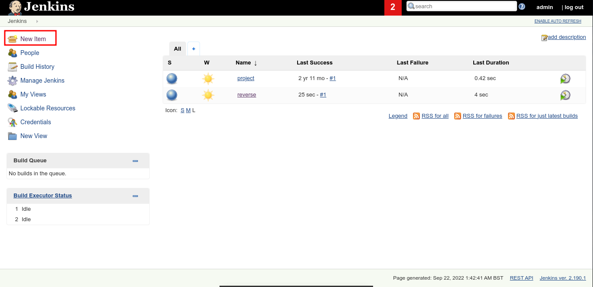
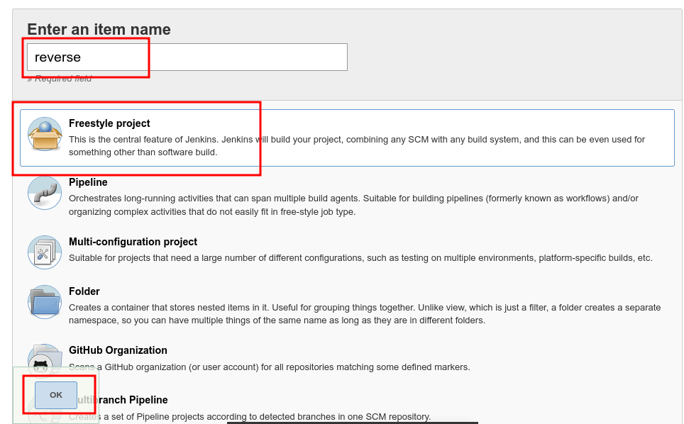
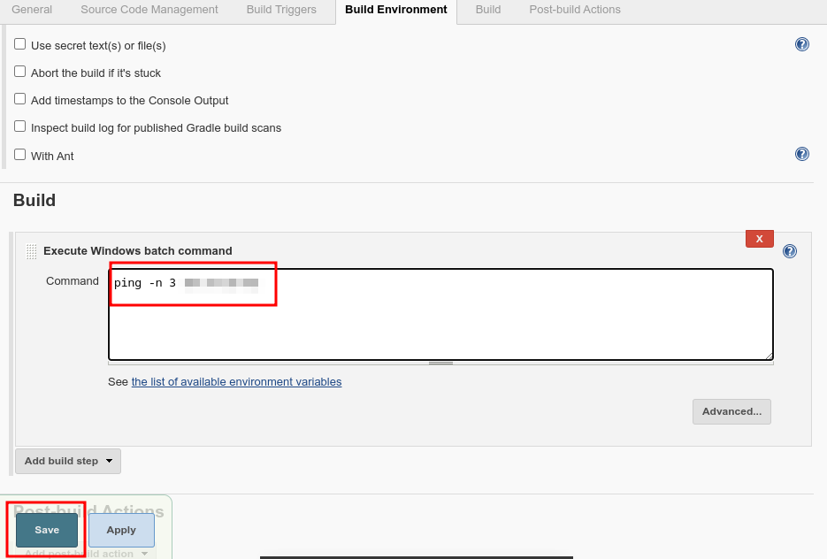
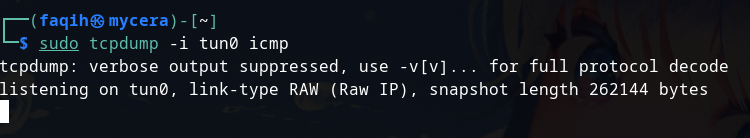
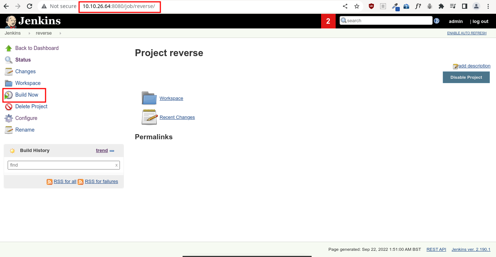
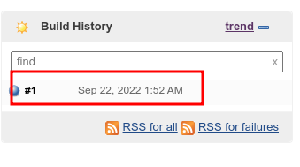
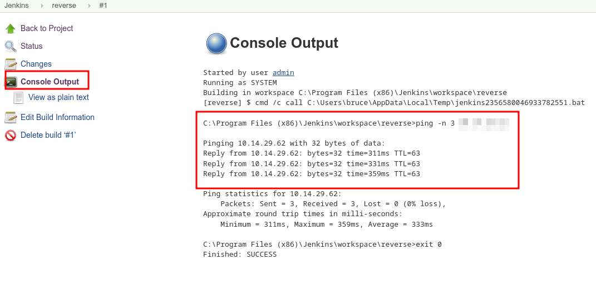
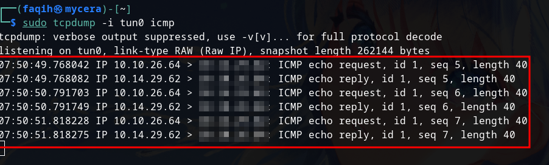

We can make a new item build by clicking New item on the top left of the page.

Fill the name item name, select freestyle project and then ok

On the build section we can execute command with option "Execute Windows Batch Command"
We can test it first by using ping command then click Save.

Setup TCP dump to catch echo request to check if the echo request ist sent.

Go to the item you've created then click "Build Now"

To check the command from Jenkins click the build history then click "Console Output"

We can see that the platform ping to our machine

We can see from our machine tcpdump command, we got echo request from the platform
